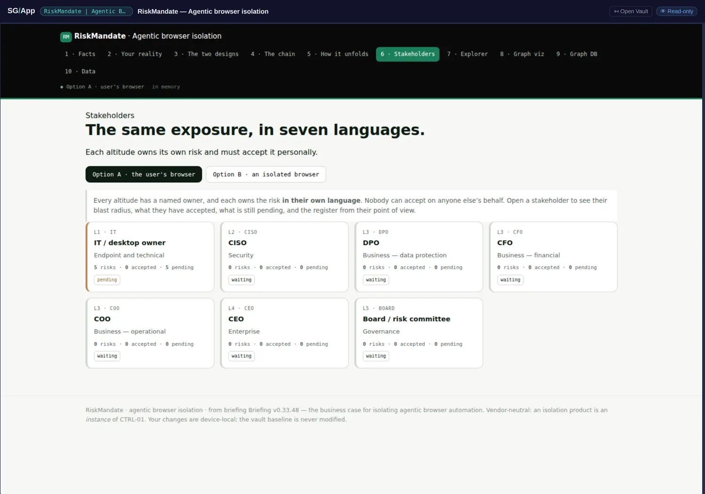

Acceptance-gated escalation
Strip the browsers out of this vault and one mechanism is left that would work on almost any decision anywhere. It is four rules, and each one removes a specific way that organisational decisions normally rot.
- Every altitude has one named owner. L1 IT, L2 CISO, L3 DPO, CFO and COO, L4 CEO, L5 Board. Not a team, not a function: a person at that altitude.
- Each owner holds the risk in their own language. The same exposure is restated at every level rather than passed upward verbatim. A board does not receive a sentence about session cookies; it receives what that exposure means at its altitude.
- Nothing is assigned automatically. A risk sits pending until its owner accepts it personally, and only an accepted risk escalates to the altitude above.
- There is no deny button. The available moves are accept, mitigate, or ask for more data. You cannot make a risk go away by disagreeing with it.

Read the counts, not the diagram
The picture above is a status report and most readers walk past it. IT has five risks pending; every altitude above it is waiting, with nothing arrived. That is not a rendering artefact and it is not a backlog: it is the mechanism working. Nothing has been passed up because nothing has been accepted yet, and the system refuses to let an unaccepted risk appear on a board's plate as though somebody had taken it.
Compare the failure mode this replaces. In the ordinary arrangement, a risk is escalated — which usually means forwarded — and arrives at a higher altitude with nobody having taken responsibility at the lower one. The higher owner then either accepts something they cannot evaluate, or sends it back, and either way the record shows movement where none happened. Requiring personal acceptance before escalation makes the ownership legible as data rather than implied by an email thread.
Why this is a graph mechanism and not a workflow
A workflow would model this as states and transitions. What the vault models instead is edges with named owners on them, which buys three things a state machine does not.
- The absence is visible. An altitude with nothing arrived is showing you a fact — nobody below has accepted — rather than an empty queue. This book calls that a named absence, and here it is load-bearing: the emptiness of the board's list is the most informative thing on the page.
- The path is the answer. Ask who holds this exposure? and the answer is a traversal — from the technical fact, through each acceptance, to whichever altitude it has reached — rather than a field somebody set. Classification as a computed path, applied to accountability.
- Restatement is an edge, not a copy. Because each altitude holds the risk in its own language, the same exposure exists as several nodes joined by acceptance edges. Nothing is overwritten in translation, so a board-level statement can always be walked back down to the packet it came from.
This site has borrowed it
The decisions page published alongside this analysis runs the same four rules over the open decisions of the book's reviews: one named owner, options rather than a yes-or-no, nothing moves until it is taken personally, and no deny button — a decision can be answered, deferred with a reason, or sent back for more data, but it cannot be silently dropped. Borrowing a mechanism from an artefact you are analysing is the strongest form of citation available: it either works or it visibly does not.
- A section of its own, wherever acceptance is discussed: the four rules are short enough to quote in full and general enough to apply outside risk.
- Chapter 2's named absence gains its strongest instance: an empty altitude that is informative precisely because it is empty.
- Chapter 5's classification-as-a-query gains an accountability example, which is more legible to a business reader than the vulnerability formula it currently uses.
- Chapter 16 (where this loses) gains an honest cost: acceptance-gating slows escalation down on purpose, and an organisation that wants speed above traceability will hate it.